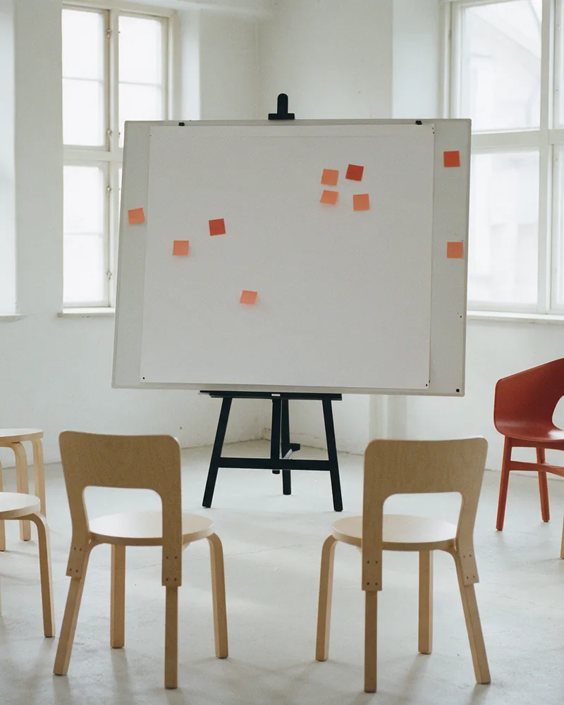
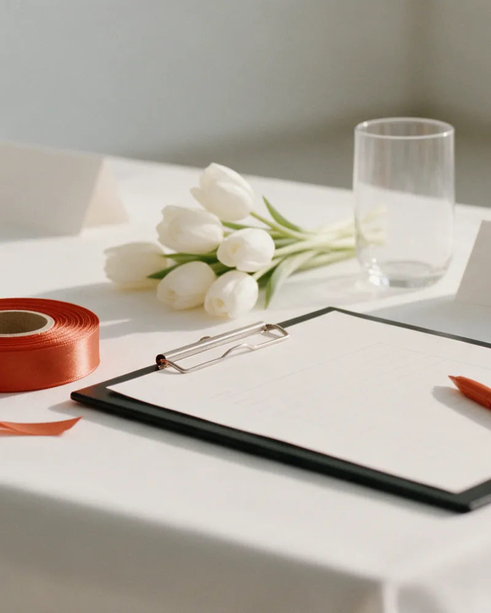

Skräddarsydda lösningar
För både privatpersoner och företag – utformade efter just dina behov.

©2025 — Helsingfors
Din tid, mitt fokus. Personlig service som levererar – för privatpersoner och företag, på svenska och finska.
Kontakta migI siffror(02)
Administration, ledning, utbildning, småbarnspedagogik, projektledning och eventplanering – samlat hos en och samma person.
10+
år som företagare
Daghemmet Fyren sedan 2015
5
examina och behörigheter
Från pedagogie magister till life coach
2
språk
Svenska och finska
1
kontaktperson
Från första kontakt till färdigt uppdrag
Varför AartWay(03)
Oavsett om du behöver stöd i det dagliga arbetet, planering av evenemang eller inspiration för ditt team – målet är att göra din vardag enklare och mer effektiv.
För både privatpersoner och företag – utformade efter just dina behov.
En kontaktperson som håller ihop helheten.
Jag finns fysiskt i Helsingfors men kan resa vid behov.
Personlig service och flexibilitet på båda språken.
Tjänster(04)
Assistans och support
Stöd i det dagliga arbetet, så att du kan lägga din tid på det som är viktigast. Jag skapar ordning och struktur och ser till att det praktiska flyter.
PrisFörhandlingsbart
Fråga om uppdraget
Inspiration för ditt team
Föreläsningar och workshops som ger inspiration och nya perspektiv. Jag har erfarenhet som universitetslärare och utbildare, bland annat inom Friends-programmet som främjar psykisk hälsa.
PrisFörhandlingsbart
Fråga om uppdraget
Arrangemang och logistik
Från planering av evenemang till logistiken runt omkring. Med erfarenhet av projektledning och eventplanering håller jag ihop helheten – från första idé till sista detalj.
PrisFörhandlingsbart
Fråga om uppdragetOm mig(05)
Med bred erfarenhet inom administration, ledning, utbildning, småbarnspedagogik, projektledning och eventplanering brinner jag för att skapa ordning, struktur och lösningar som verkligen fungerar.
Jag har arbetat inom både tredje sektorn och kommunal verksamhet. Som företagare trivs jag med att kombinera kreativitet med varierande uppgifter och personlig service.
Erfarenhet från bland annat
Bakgrund(06)
Erfarenhet från både tredje sektorn och kommunal verksamhet – och över tio år som företagare.
Så går det till(07)
Personligt och tydligt – från första kontakt till färdigt uppdrag.
Pris
Förhandlingsbart
Varje uppdrag är unikt. Vi kommer överens om omfattning och pris utifrån dina behov.
Be om ett förslagSkicka ett mejl eller fyll i formuläret och berätta kort vad du behöver hjälp med.
Tillsammans går vi igenom vad du vill uppnå, vilken tidtabell du har och vad uppdraget omfattar.
Du får ett förslag som är anpassat efter dig. Priset är förhandlingsbart och vi kommer överens innan jag sätter igång.
Jag sköter uppdraget med personlig service och flexibilitet – och du har en och samma kontaktperson hela vägen.
Utöver AartWay(08)
Sedan 2015
Jag driver daghemmet Fyren i Nordsjö sedan 2015.
Medgrundare
En förening i startgroparna som vill möjliggöra kulturella upplevelser och rekreation för barn från mindre bemedlade familjer.
Innehållsskapare
Jag skapar innehåll till VakaKids på TikTok, Instagram och Facebook.
Frågor(09)
Hittar du inte svaret? Hör av dig så hjälper jag dig.
aartwayassistance@gmail.comBåde privatpersoner och företag. Lösningarna skräddarsys efter dina behov – oavsett om det gäller stöd i vardagen, ett evenemang eller en workshop för ditt team.
Administrativ assistans och support, föreläsningar och workshops samt praktiska arrangemang och logistik.
På svenska och finska.
Jag finns fysiskt i Helsingfors men kan resa vid behov.
Priset är förhandlingsbart och beror på uppdragets omfattning. Hör av dig så diskuterar vi dina behov och mål.
Skicka ett mejl till aartwayassistance@gmail.com eller använd formuläret nedan, så hör jag av mig.
Kontakt(10)
Hör av dig så diskuterar vi hur jag kan hjälpa dig!